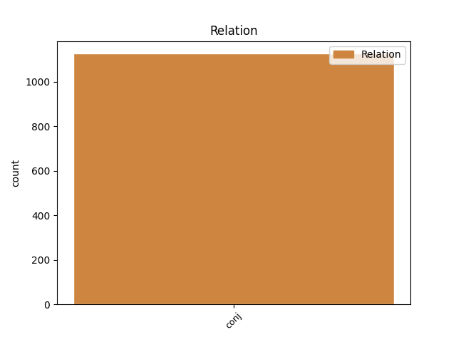
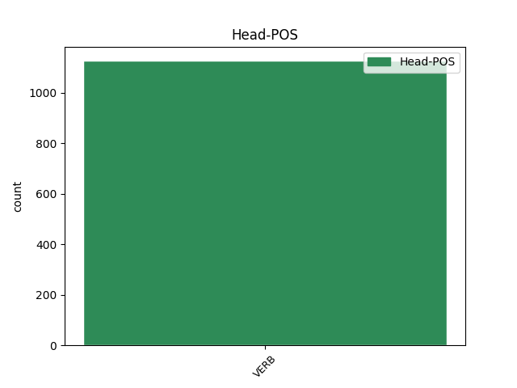
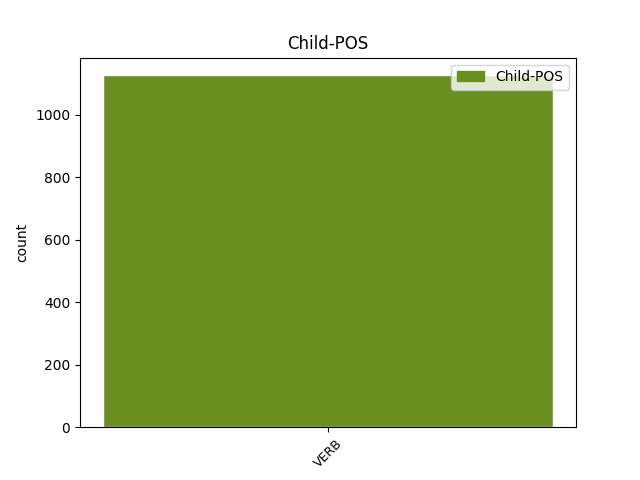

Distribution of features within this leaf



Agreement Rules sorted by frequency.
- When the dependent token is the conjunct(conj) of the head token, and the head token is VERB and the dependent token is VERB.
1 ל _ _ _ _ 0 _ _ _
2 גליל _ _ _ _ 0 _ _ _
3 לא _ _ _ _ 0 _ _ _
4 היתה _ _ _ _ 0 _ _ _
5 תשובה _ _ _ _ 0 _ _ _
6 ל _ _ _ _ 0 _ _ _
7 ה_ _ _ _ _ 0 _ _ _
8 יכולת _ _ _ _ 0 _ _ _
9 ה _ _ _ _ 0 _ _ _
10 אישית _ _ _ _ 0 _ _ _
11 ה _ _ _ _ 0 _ _ _
12 גבוהה _ _ _ _ 0 _ _ _
13 של _ _ _ _ 0 _ _ _
14 פירסון _ _ _ _ 0 _ _ _
15 , _ _ _ _ 0 _ _ _
16 ש _ _ _ _ 0 _ _ _
17 קלע קלע VERB VERB Gender=Masc|HebBinyan=PAAL|Number=Sing|Person=3|Tense=Past|Voice=Act 0 _ _ _
18 33 _ _ _ _ 0 _ _ _
19 נקודות _ _ _ _ 0 _ _ _
20 ו _ _ _ _ 0 _ _ _
21 ריכז ריכז VERB VERB Gender=Masc|HebBinyan=PIEL|Number=Sing|Person=3|Tense=Past|Voice=Act 17 conj _ _
22 את _ _ _ _ 0 _ _ _
23 משחק _ _ _ _ 0 _ _ _
24 קבוצה_ _ _ _ _ 0 _ _ _
25 _של_ _ _ _ _ 0 _ _ _
26 _הוא _ _ _ _ 0 _ _ _
27 במשך _ _ _ _ 0 _ _ _
28 דקות _ _ _ _ 0 _ _ _
29 רבות _ _ _ _ 0 _ _ _
30 . _ _ _ _ 0 _ _ _
Disagree Examples:
1 דובר _ _ _ _ 0 _ _ _
2 צה"ל _ _ _ _ 0 _ _ _
3 מסר _ _ _ _ 0 _ _ _
4 ש _ _ _ _ 0 _ _ _
5 ה _ _ _ _ 0 _ _ _
6 סיור _ _ _ _ 0 _ _ _
7 השיב השיב VERB VERB Gender=Masc|HebBinyan=HIFIL|Number=Sing|Person=3|Tense=Past|Voice=Act 0 _ _ _
8 ב _ _ _ _ 0 _ _ _
9 אש _ _ _ _ 0 _ _ _
10 אך _ _ _ _ 0 _ _ _
11 לא _ _ _ _ 0 _ _ _
12 דוח דיווח VERB VERB Gender=Masc|HebBinyan=PIEL|Mood=Imp|Number=Sing|Person=2|Voice=Act 7 conj _ _
13 על _ _ _ _ 0 _ _ _
14 נפגעים _ _ _ _ 0 _ _ _
15 . _ _ _ _ 0 _ _ _
1 הוא _ _ _ _ 0 _ _ _
2 ו _ _ _ _ 0 _ _ _
3 חבר_ _ _ _ _ 0 _ _ _
4 _של_ _ _ _ _ 0 _ _ _
5 _הוא _ _ _ _ 0 _ _ _
6 ל _ _ _ _ 0 _ _ _
7 ה_ _ _ _ _ 0 _ _ _
8 דעה _ _ _ _ 0 _ _ _
9 הרי _ _ _ _ 0 _ _ _
10 פותחים _ _ _ _ 0 _ _ _
11 ו _ _ _ _ 0 _ _ _
12 סוגרים סגר VERB VERB Gender=Masc|HebBinyan=PAAL|Number=Plur|Person=1,2,3|VerbForm=Part|Voice=Act 0 _ _ _
13 את _ _ _ _ 0 _ _ _
14 ה _ _ _ _ 0 _ _ _
15 מעגל _ _ _ _ 0 _ _ _
16 ב _ _ _ _ 0 _ _ _
17 עצמם _ _ _ _ 0 _ _ _
18 : _ _ _ _ 0 _ _ _
19 קודם _ _ _ _ 0 _ _ _
20 הפקיעו הפקיע VERB VERB Gender=Fem,Masc|HebBinyan=HIFIL|Number=Plur|Person=3|Tense=Past|Voice=Act 12 conj _ _
21 ו _ _ _ _ 0 _ _ _
22 ניערו _ _ _ _ 0 _ _ _
23 מ _ _ _ _ 0 _ _ _
24 עצמם _ _ _ _ 0 _ _ _
25 כל _ _ _ _ 0 _ _ _
26 סמל _ _ _ _ 0 _ _ _
27 לאומי _ _ _ _ 0 _ _ _
28 ; _ _ _ _ 0 _ _ _
29 אחר _ _ _ _ 0 _ _ _
30 - _ _ _ _ 0 _ _ _
31 כך _ _ _ _ 0 _ _ _
32 התאמצו _ _ _ _ 0 _ _ _
33 להחדיר _ _ _ _ 0 _ _ _
34 ל _ _ _ _ 0 _ _ _
35 ה_ _ _ _ _ 0 _ _ _
36 ציבור _ _ _ _ 0 _ _ _
37 ה _ _ _ _ 0 _ _ _
38 ישראלי _ _ _ _ 0 _ _ _
39 את _ _ _ _ 0 _ _ _
40 ה _ _ _ _ 0 _ _ _
41 השקפה _ _ _ _ 0 _ _ _
42 ש _ _ _ _ 0 _ _ _
43 סמלים _ _ _ _ 0 _ _ _
44 לאומיים _ _ _ _ 0 _ _ _
45 , _ _ _ _ 0 _ _ _
46 ו _ _ _ _ 0 _ _ _
47 בעיקר _ _ _ _ 0 _ _ _
48 ה _ _ _ _ 0 _ _ _
49 התרגשות _ _ _ _ 0 _ _ _
50 מן_ _ _ _ _ 0 _ _ _
51 _הם _ _ _ _ 0 _ _ _
52 , _ _ _ _ 0 _ _ _
53 קשורים _ _ _ _ 0 _ _ _
54 ל _ _ _ _ 0 _ _ _
55 השקפות _ _ _ _ 0 _ _ _
56 ימניות _ _ _ _ 0 _ _ _
57 ו _ _ _ _ 0 _ _ _
58 מוליכים _ _ _ _ 0 _ _ _
59 אל_ _ _ _ _ 0 _ _ _
60 _הן _ _ _ _ 0 _ _ _
61 . _ _ _ _ 0 _ _ _
1 אין _ _ _ _ 0 _ _ _
2 ודאות _ _ _ _ 0 _ _ _
3 כי _ _ _ _ 0 _ _ _
4 חברי _ _ _ _ 0 _ _ _
5 ה _ _ _ _ 0 _ _ _
6 תנועה _ _ _ _ 0 _ _ _
7 ה _ _ _ _ 0 _ _ _
8 מאורגנים _ _ _ _ 0 _ _ _
9 יבקשו _ _ _ _ 0 _ _ _
10 לנצל _ _ _ _ 0 _ _ _
11 את _ _ _ _ 0 _ _ _
12 ה _ _ _ _ 0 _ _ _
13 היתר _ _ _ _ 0 _ _ _
14 ה _ _ _ _ 0 _ _ _
15 זה _ _ _ _ 0 _ _ _
16 , _ _ _ _ 0 _ _ _
17 אם _ _ _ _ 0 _ _ _
18 כי _ _ _ _ 0 _ _ _
19 אין _ _ _ _ 0 _ _ _
20 להקל _ _ _ _ 0 _ _ _
21 ראש _ _ _ _ 0 _ _ _
22 ב _ _ _ _ 0 _ _ _
23 ה_ _ _ _ _ 0 _ _ _
24 ידיעה _ _ _ _ 0 _ _ _
25 כי _ _ _ _ 0 _ _ _
26 " _ _ _ _ 0 _ _ _
27 ייתכן _ _ _ _ 0 _ _ _
28 ש _ _ _ _ 0 _ _ _
29 בודדים _ _ _ _ 0 _ _ _
30 ב _ _ _ _ 0 _ _ _
31 ה_ _ _ _ _ 0 _ _ _
32 תנועה _ _ _ _ 0 _ _ _
33 מכינים הכין VERB VERB Gender=Masc|HebBinyan=HIFIL|Number=Plur|Person=1,2,3|VerbForm=Part|Voice=Act 0 _ _ _
34 , _ _ _ _ 0 _ _ _
35 או _ _ _ _ 0 _ _ _
36 יכינו הכין VERB VERB Gender=Fem,Masc|HebBinyan=HIFIL|Number=Plur|Person=3|Tense=Fut|Voice=Act 33 conj _ _
37 ב _ _ _ _ 0 _ _ _
38 ה_ _ _ _ _ 0 _ _ _
39 ימים _ _ _ _ 0 _ _ _
40 ה _ _ _ _ 0 _ _ _
41 קרובים _ _ _ _ 0 _ _ _
42 , _ _ _ _ 0 _ _ _
43 רשימות _ _ _ _ 0 _ _ _
44 של _ _ _ _ 0 _ _ _
45 ערבים _ _ _ _ 0 _ _ _
46 , _ _ _ _ 0 _ _ _
47 אנשי _ _ _ _ 0 _ _ _
48 שמאל _ _ _ _ 0 _ _ _
49 ו _ _ _ _ 0 _ _ _
50 תקשורת _ _ _ _ 0 _ _ _
51 ו _ _ _ _ 0 _ _ _
52 יסמנו _ _ _ _ 0 _ _ _
53 את_ _ _ _ _ 0 _ _ _
54 _הם _ _ _ _ 0 _ _ _
55 כ _ _ _ _ 0 _ _ _
56 מטרות _ _ _ _ 0 _ _ _
57 ל _ _ _ _ 0 _ _ _
58 פגיעה _ _ _ _ 0 _ _ _
59 " _ _ _ _ 0 _ _ _
60 ( _ _ _ _ 0 _ _ _
61 " _ _ _ _ 0 _ _ _
62 ה _ _ _ _ 0 _ _ _
63 ארץ _ _ _ _ 0 _ _ _
64 " _ _ _ _ 0 _ _ _
65 , _ _ _ _ 0 _ _ _
66 811 _ _ _ _ 0 _ _ _
67 ) _ _ _ _ 0 _ _ _
68 . _ _ _ _ 0 _ _ _
1 משטרת _ _ _ _ 0 _ _ _
2 ישראל _ _ _ _ 0 _ _ _
3 עשתה עשה VERB VERB Gender=Fem|HebBinyan=PAAL|Number=Sing|Person=3|Tense=Past|Voice=Act 0 _ _ _
4 מאמץ _ _ _ _ 0 _ _ _
5 גדול _ _ _ _ 0 _ _ _
6 כדי _ _ _ _ 0 _ _ _
7 לרסן _ _ _ _ 0 _ _ _
8 את _ _ _ _ 0 _ _ _
9 ה _ _ _ _ 0 _ _ _
10 המונים _ _ _ _ 0 _ _ _
11 ש _ _ _ _ 0 _ _ _
12 התפרעו _ _ _ _ 0 _ _ _
13 ב _ _ _ _ 0 _ _ _
14 שעת _ _ _ _ 0 _ _ _
15 ה _ _ _ _ 0 _ _ _
16 לוויה _ _ _ _ 0 _ _ _
17 ב _ _ _ _ 0 _ _ _
18 ירושלים _ _ _ _ 0 _ _ _
19 ; _ _ _ _ 0 _ _ _
20 היא _ _ _ _ 0 _ _ _
21 מצווה ציווה VERB VERB Gender=Fem|HebBinyan=PIEL|Number=Sing|Person=1,2,3|VerbForm=Part|Voice=Act 3 conj _ _
22 להתמיד _ _ _ _ 0 _ _ _
23 ב _ _ _ _ 0 _ _ _
24 מאמץ _ _ _ _ 0 _ _ _
25 זה _ _ _ _ 0 _ _ _
26 , _ _ _ _ 0 _ _ _
27 ו _ _ _ _ 0 _ _ _
28 לא _ _ _ _ 0 _ _ _
29 רק _ _ _ _ 0 _ _ _
30 ב _ _ _ _ 0 _ _ _
31 ירושלים _ _ _ _ 0 _ _ _
32 . _ _ _ _ 0 _ _ _
1 אלא _ _ _ _ 0 _ _ _
2 ש _ _ _ _ 0 _ _ _
3 טרנספר _ _ _ _ 0 _ _ _
4 אי _ _ _ _ 0 _ _ _
5 - _ _ _ _ 0 _ _ _
6 אפשר _ _ _ _ 0 _ _ _
7 לבצע _ _ _ _ 0 _ _ _
8 , _ _ _ _ 0 _ _ _
9 ו _ _ _ _ 0 _ _ _
10 ב _ _ _ _ 0 _ _ _
11 כל _ _ _ _ 0 _ _ _
12 מקרה _ _ _ _ 0 _ _ _
13 הוא _ _ _ _ 0 _ _ _
14 רק _ _ _ _ 0 _ _ _
15 מעביר _ _ _ _ 0 _ _ _
16 את _ _ _ _ 0 _ _ _
17 ה _ _ _ _ 0 _ _ _
18 בעיה _ _ _ _ 0 _ _ _
19 אל _ _ _ _ 0 _ _ _
20 ה _ _ _ _ 0 _ _ _
21 גבול _ _ _ _ 0 _ _ _
22 ; _ _ _ _ 0 _ _ _
23 סיפוח _ _ _ _ 0 _ _ _
24 משאיר השאיר VERB VERB Gender=Masc|HebBinyan=HIFIL|Number=Sing|Person=1,2,3|VerbForm=Part|Voice=Act 0 _ _ _
25 את _ _ _ _ 0 _ _ _
26 ה _ _ _ _ 0 _ _ _
27 בעיה _ _ _ _ 0 _ _ _
28 כאן _ _ _ _ 0 _ _ _
29 ; _ _ _ _ 0 _ _ _
30 על _ _ _ _ 0 _ _ _
31 מעמד _ _ _ _ 0 _ _ _
32 ב _ _ _ _ 0 _ _ _
33 ירושלים _ _ _ _ 0 _ _ _
34 לא _ _ _ _ 0 _ _ _
35 יוותרו ויתר VERB VERB Gender=Fem,Masc|Number=Plur|Person=3|Tense=Fut 24 conj _ _
36 ה _ _ _ _ 0 _ _ _
37 ערבים _ _ _ _ 0 _ _ _
38 ; _ _ _ _ 0 _ _ _
39 לאומיות_ _ _ _ _ 0 _ _ _
40 _של_ _ _ _ _ 0 _ _ _
41 _הם _ _ _ _ 0 _ _ _
42 של _ _ _ _ 0 _ _ _
43 ערביי _ _ _ _ 0 _ _ _
44 ישראל _ _ _ _ 0 _ _ _
45 מתעצמת _ _ _ _ 0 _ _ _
46 ב _ _ _ _ 0 _ _ _
47 ה_ _ _ _ _ 0 _ _ _
48 דרך _ _ _ _ 0 _ _ _
49 ל _ _ _ _ 0 _ _ _
50 חיפוש _ _ _ _ 0 _ _ _
51 הגדרה _ _ _ _ 0 _ _ _
52 עצמית _ _ _ _ 0 _ _ _
53 מ _ _ _ _ 0 _ _ _
54 שלהם _ _ _ _ 0 _ _ _
55 _הם _ _ _ _ 0 _ _ _
56 , _ _ _ _ 0 _ _ _
57 ו _ _ _ _ 0 _ _ _
58 כל _ _ _ _ 0 _ _ _
59 פתרון _ _ _ _ 0 _ _ _
60 ב _ _ _ _ 0 _ _ _
61 ה_ _ _ _ _ 0 _ _ _
62 שטחים _ _ _ _ 0 _ _ _
63 יותיר _ _ _ _ 0 _ _ _
64 פלשתינאים _ _ _ _ 0 _ _ _
65 ה _ _ _ _ 0 _ _ _
66 מעוניינים _ _ _ _ 0 _ _ _
67 להמשיך _ _ _ _ 0 _ _ _
68 להילחם _ _ _ _ 0 _ _ _
69 . _ _ _ _ 0 _ _ _